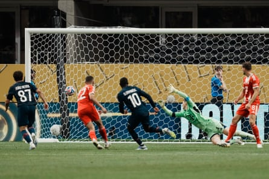

PSG were a goal up and two men down, deep into stoppage time, when they went on one last run of hundreds here. Suddenly, as had happened so many times in a breathless afternoon in Atlanta the pitch had opened up and footballer’s flew into the space. They should have been exhausted, barely able to move, but off went Vitinha through the middle, Ousmane Dembélé sprinting up alongside. He smashed the crossbar with the first shot but this wasn’t done just yet; Achraf Hakimi got possession back, dribbled through three men and set up Dembélé to score the goal that ended it.
Actually, ended might not be the word because although that was the 96th minute, there was still time for Bayern to have a penalty given to them and then taken away again. But after Désiré Doué had got the opener on 78 minutes, Dembélé had secured PSG’s passage to the Club World Cup semi-final. Bayern were out. Worse, they had seen Jamal Musiala carried off at half-time, having suffered a horrific broken ankle after a challenge from Gianluigi Donnarumma who, seeing the grim sight of his opponent’s foot facing the wrong way, had been left close to tears.
That had given a sour, sad note to a breathless and brilliant game, a match of joy and enthusiasm in which the players had given generously, and one that had been open to the end. Vincent Kompany had said he could predict what would happen, Luis Enrique seemed to agree, and it turned out they were right. We will have less of the ball than normal, the PSG coach said; so will we, the Bayern manager said. Kompany, after all, had described them as teams with “extreme principles”, and so it was: a game defined by intensity and intent, an open, often frenetic match, of rob and rob back where the roars from the stands had a bit of the he’s behind you about them.
Passes were misplaced, the ball lost and won back again, but not for any lack of quality – quite the opposite – but the speed at which it was all happening. They had been playing just three minutes when Khvicha Kvaratskhelia robbed Michael Olise for Doué to shoot wide, and just four when Hakimi – the right-back, remember – almost stole from Josip Stanisic on the edge of his own six-yard box. If this was what they predicted, it was a riot, blows traded. Not like heavyweights, but something faster, the combinations too quick to see coming, a kind of organised chaos.
On 18 minutes, superb work from Bradley Barcola soon released Hakimi on the right and he dashed away to deliver a deep ball to the far post, where Kvaratskhelia hit the side netting. Nineteen seconds later, there was another roar as it looked like Kingsley Coman was going to escape at the other end. PSG closed that quickly, but the speed with which it had happened, going from one attack to another, was a picture of a half that was frenetic. At half-time, PSG’s pass completion was at 77%, way below their normal levels.
Their threat remained. Bayern’s did too. Barcola again came in off the left to open the pitch out, looking left or for Kvaratskhelia to run, and when the ball came back, Fabián Ruiz turned over the game’s best chance so far. At the other end Donnarumma dived to save from Olise and then, back at this one, Manuel Neuer produced a brilliant stop at the feet of Kvaratskhelia, who had driven all the way into the six-yard box.
Ousmane Dembélé fires home Paris Saint-Germain’s second goal in stoppage time.Photograph: S Mellar/FC Bayern/Getty Images
Two strong hands had denied two goals and another followed. Harry Kane just about forced his way past Willian Pacho and craned his neck to head over a Coman cross when Donnarumma stopped from Aleksandar Pavlovic – a save made all the more impressive by the fact that it hadn’t actually been a shot but a delivery bending in at the far post. Dayot Upamecano then headed in what might have been the opener but the flag was up, PSG holding the line as the free-kick came in and catching him and five others offside.
This had been brilliant, and then just on half-time it went bad. Diving out to reach a ball by the byline, Donnarumma went through Musiala, whose left ankle turned, apparently broken and dislocated. Musiala was left in a heap in the corner, a crowd soon gathering around him; the goalkeeper was left close to tears, crouched by his line wearing a lost look. As they went off, he didn’t know where to go. In the second half, he was booed when he came into contact with the ball; some supporters here blamed him, even if his opponents didn’t.
PSG should have taken the lead early in the second half when Barcola raced clear, released by Kvaratskhelia, but as he opened up his body to take the shot Neuer got a glimpse of his intentions and made another hugely impressive save. Yet play tilted Bayern’s way, if that meant anything, given how quickly everything could switch, a moment’s clarity in the chaos. An example: on the hour, Olise curled a shot that Neuer gathered; almost immediately, an outrageous 70-yard diagonal from Nuno Mendes set Doué away and beyond Konrad Laimer to flash a cross through the six-yard box.
Olise then had best chance so far but, faced by Donnarumma, lifted his shot over the near post. With 20 minutes remaining, on came Dembélé and straight away left Olise in his dust, screeching up the wing. He might have score two when a Neuer hit a routine pass straight at Kvaratskhelia, near the area. The keeper recovered just enough to slide in and make a desperate lunge at he Georgian but Dembele got to the loose ball first, stepped past him, and, with the goal unguarded, hit the sidenetting. Every moment carried a threat; heading into the final 15 minutes, every moment could be decisive too.
And a moment was. It started with a robbery, Kane this time the man caught out, and there was Vitinha dashing forward, João Neves produced a superb turn and Doué came inside, and cut the shot into the corner, Neuer slipping as he tried to adjust. That, it seemed would be that, but this was a wild game that would have a wild finish. Pacho was sent off for a foul on Leon Goretzka, Kane had an equaliser ruled out for offside and then Lucas Hernández almost put the victory in danger with an act of stupidity, red carded for an elbow on Raphaël Guerreiro. Bayern kept coming, offered hope, but instead it was PSG who set off once more, this time to the semi-final in New York.